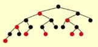
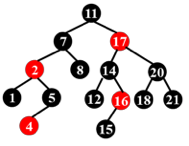
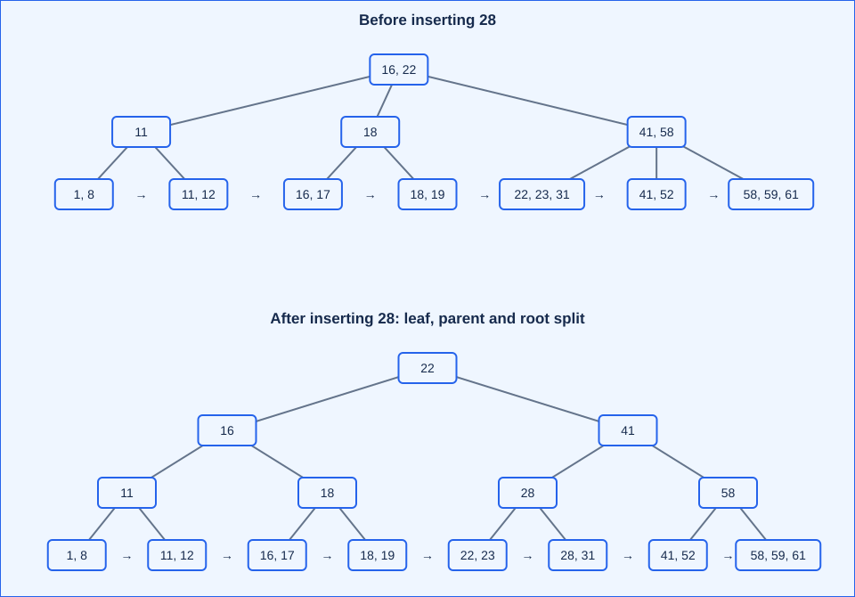
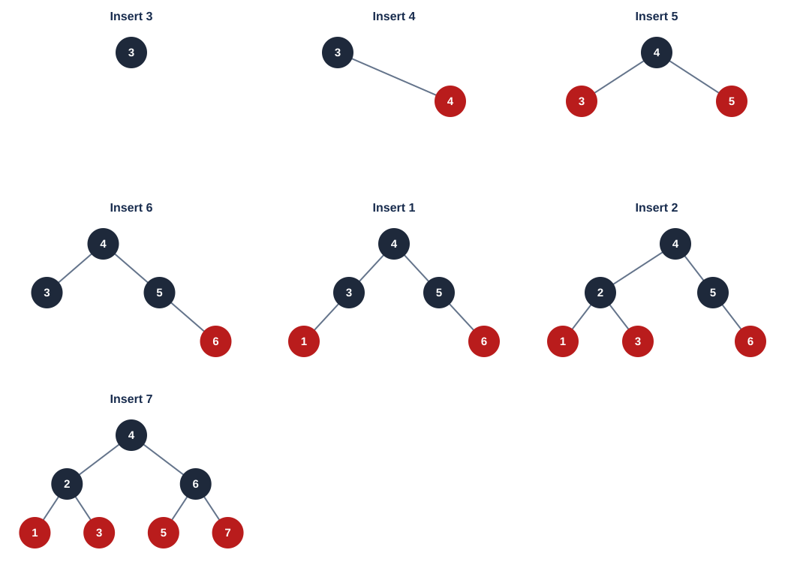
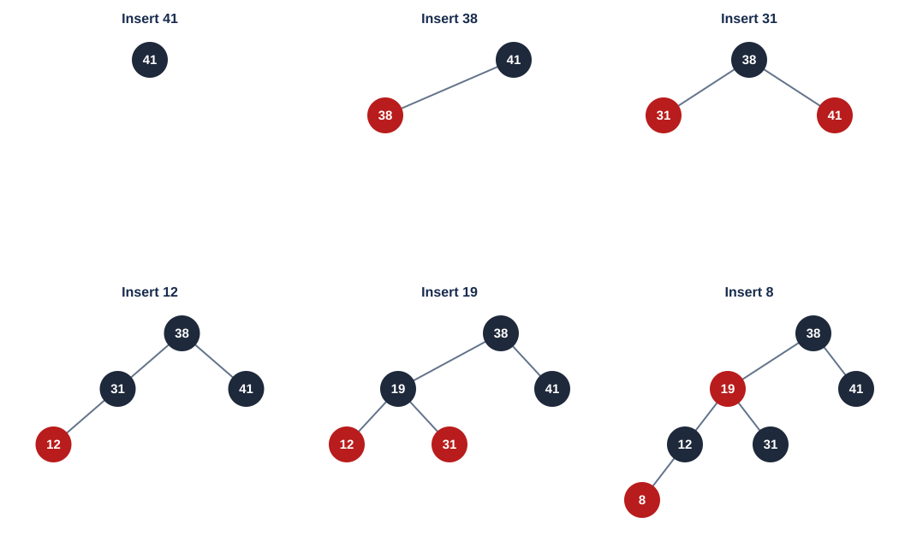
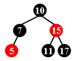
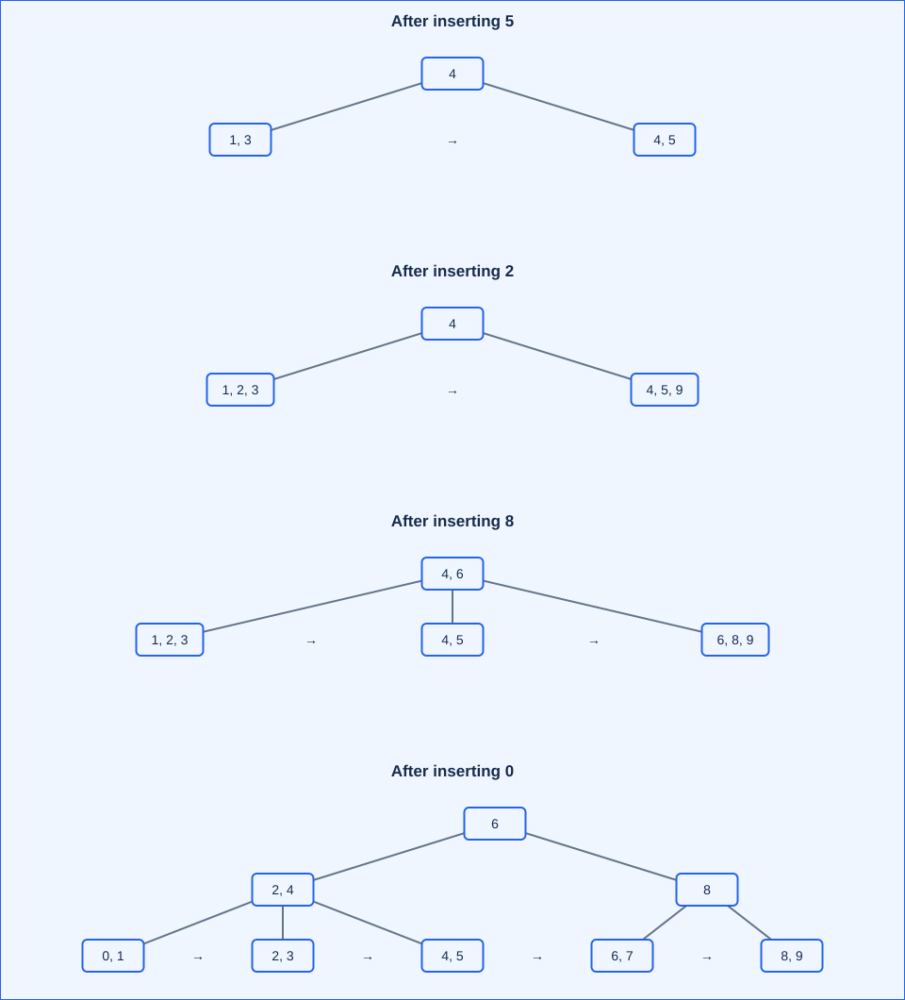
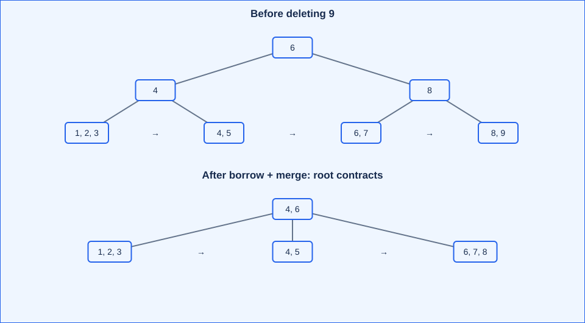

Lecture 2: Red-Black Trees and B+ Trees
主线：black-height balance（黑高平衡）减少更新时的旋转；multiway branching（多路分支）减少块存储的访问层数。 Both support dynamic searching（动态查找）, but optimize different costs.
Course overview（课程信息） · Lecture 1（上一课时）
1. Red-black trees（红黑树）
1.1 Definition and NIL（定义与外部叶子）
A red-black tree, RBT is a BST satisfying five properties:
- Every node is red or black（红或黑）.
- The root is black（根为黑）.
- Every NIL leaf is black（空叶子为黑）.
- A red node has two black children: no adjacent red nodes（无相邻红节点）.
- From each node, all simple paths（简单路径）to descendant NIL leaves contain the same number of black nodes（黑节点数相同）.
Internal node（内部节点） = a real key-bearing node, including an ordinary terminal node. External node / NIL leaf（外部节点／空叶子） = a missing child pointer. 红黑树的 leaf 指 NIL，不是普通树中“没有孩子的实节点”。NIL 常被省略，判断黑高时必须补回来。
Typical node fields: key, left, right, parent, color. A color needs only one bit conceptually; the parent pointer（父指针）supports iterative upward repair（迭代向上修复）, trading space for convenient traversal. Actual structure size depends on alignment（内存对齐）. These fields are an implementation choice, not extra defining properties.
With \(N\) real nodes, \(2N-(N-1)=N+1\) child pointers are missing. Use one shared black sentinel（哨兵）, rather than allocating \(N+1\) NIL objects. It makes color checks uniform; deletion must still track the parent of the particular missing-child position.
1.2 Black-height and height bound（黑高与高度界）
Black-height, \(bh(x)\)（黑高）： number of black nodes from \(x\) to a NIL leaf, excluding \(x\), including NIL. Set \(bh(\mathrm{NIL})=0\); \(bh(T)=bh(\mathrm{root})\).
Here \(h(x)\) counts edges to the farthest NIL, so \(h(\mathrm{NIL})=0\) and a singleton tree has \(h=1\). 上一课时 AVL 高度数到实叶子，单节点高度为 0；非空树两种高度相差 1。
For a real node \(x\) and its child \(y\):
注意：决定减不减 1 的是 child 的颜色，因为定义排除了当前节点。 MOOC 2.1.2 Q1: possible values are A and B, \(bh(x)-1\) and \(bh(x)\); \(h(x)=k+1\) alone does not select one.
Size lemma（规模引理）： the subtree rooted at \(x\) has at least \(2^{bh(x)}-1\) real nodes. Induction on height（按高度归纳）:
- NIL: \(0=2^0-1\).
- Both children have smaller height and black-height at least \(bh(x)-1\). Hence
WK3 T/F10: “The subtree has no more than \(2^{bh(x)}-1\) internal nodes.” False: the lemma is a lower bound（下界）. A black root with two red terminal children has \(bh=1\), but 3 real nodes rather than at most 1.
MOOC 2.1.2 Q2: prove \(bh(T)\ge h(T)/2\). On a longest root-to-NIL path, exclude the root. Every red node is followed by a black node, and NIL is black; thus at least half the remaining nodes are black. Therefore
The supplied slide writes \(2\ln(N+1)\); the precise bound above uses base 2（以 2 为底）. With natural logarithms it is \((2/\ln2)\ln(N+1)\). Independent lecture reference, pp. 3, 31.
Path ratio（路径比例）： every root-to-NIL path has the same \(b\) black nodes excluding the root, and length between \(b\) and \(2b\). Thus longest ≤ twice shortest. 比较的是到 NIL 的路径，不能直接换成到普通实叶子的边数。
1.3 Definition checkpoints（定义题）
| Source | Statement / question | Answer and reason |
|---|---|---|
| MOOC Quiz 2.1 Q1; WK2 T/F9 | Farthest-leaf path ≤ twice nearest-leaf path. | True, by the path-ratio argument above. |
| MOOC Quiz 2.1 Q2 | If a red node has two children, their colors must agree. | True: both are black, including NIL children. |
| WK2 T/F6 | Every two-real-node RBT contains a red node. | True: black root + red child. A black child would give unequal black counts against the missing branch. |
| WK3 T/F6 | A black node with two children may have differently colored children. | True: root 10B, left 5R with children 3B,7B, right 15B is valid; black-height balance does not require sibling colors to match. |
| WK2 T/F3 | Every three-real-node RBT contains a red node. | False: a black root with two black children is valid. |
WK3 MC1: different structure or node colors counts as a different RBT. How many RBTs have 3 internal nodes? A: 1; B: 2; C: 3; D: more than 3. Answer: B (2), for a fixed ordered key set: the root with two real children, either both black or both red. A three-node chain fails either equal black-height or the no-red-red rule.
MOOC 2.1.1 Q1: is the pictured tree a red-black tree? — True. No red-red edge; equal black counts to all missing-child positions. It need not satisfy AVL balance.

WK2 T/F4: is the following BST a valid red-black tree? — False.

At red node 16, path 16 → NIL contains one black node; 16 → 15 → NIL contains two. 黑高失衡，不能只数到实叶子。 More generally, a red node cannot have exactly one real child. A valid one-child black node can have only a red terminal child.
1.4 Offline discussion: can we omit NIL?（去掉 NIL 的等价定义）
Question: remove “every NIL leaf is black”; how should the remaining definition change?
Keep root black and prohibit red-red edges. For every node \(x\), require equal black counts on paths from \(x\) to every descendant real node of degree 0 or 1（实孩子数小于 2）, including that endpoint. For \(x\) itself of degree < 2, include the zero-edge path as well. Whether \(x\) is counted is immaterial to equality if applied consistently.
Each missing-child path ends immediately after such a real node. Removing the final black NIL subtracts exactly 1 from every path, so the conditions are equivalent. 只比较到普通叶子的路径不够：a black root with a lone black child would incorrectly pass, despite unequal missing-branch black-heights. The shared sentinel keeps both the definition and implementation simpler.
2. RBT operations（红黑树操作）
2.1 Bottom-up insertion（自底向上插入）
BST insertion → color new node red → repair red-red conflict → ensure black root. A red insertion preserves black counts; black insertion would immediately disturb them. WK2 T/F1 (“insert then color black”): False. A new root is the final black-root exception.
Let \(z\) be the current red node, \(p\) its parent, \(g\) its grandparent, and \(u\) its uncle（叔节点，父亲的兄弟）. If \(p\) is black, stop. Assume \(p=g_L\); mirror left/right for the other side.
| Case | Condition | Action | Next |
|---|---|---|---|
| 1: red uncle（红叔） | \(p,u\) red | Make \(p,u\) black and \(g\) red. | Set \(z=g\); conflict may propagate upward. |
| 2: triangle（折线） | \(u\) black, \(z=p_R\) | Left-rotate at \(p\). | Convert to Case 3; update node roles. |
| 3: line（直线） | \(u\) black, \(z=p_L\) | Make \(p\) black, \(g\) red; right-rotate at \(g\). | Local conflict resolved. |
NIL counts as a black uncle. Rotations preserve BST order（中序顺序）; recoloring preserves black counts except a possible uniform increase when the root becomes black. Case 1 can repeat \(O(\log N)\) times; Cases 2–3 use at most two single rotations（最多两次单旋） in total. Worst-case insertion time: \(O(\log N)\).
MOOC example: insert 5 under black 7 → no repair. Then insert 4 under red 5 → recolor 5/8 black and 7 red (Case 1); 7 conflicts with red 2 under 11, uncle 14 black → left-rotate 2 (Case 2), then recolor and right-rotate 11 (Case 3). New root 7 black.
2.2 Top-down insertion（自顶向下插入）· offline discussion
Question: can repairs happen while descending, before insertion at the bottom?
A standard approach splits “black parent + two red children” configurations on the search path:
- At such a node \(x\), color flip（翻色）: \(x\) red, both children black. Paths through this configuration keep the same black count; if \(x\) is root, make it black again.
- If this produces a red-red edge with \(x\)'s parent, immediately use a line/triangle rotation and recoloring. Earlier splits ensure that the uncle is black in the standard scheme.
- Continue on the correct search branch in the updated tree, maintaining parent/grandparent links. Insert the final red node and perform the local conflict repair if needed; keep root black.
引导：冲突来自实际翻色，不是“假设新键已经挂在某个红节点下”。 The lecture discussed several student ideas; the description above is the standard color-flip scheme, also covered in this top-down insertion reference, pp. 5–8.
Both directions take \(O(\log N)\) time. Bottom-up repair can stop immediately after a lucky insertion under a black parent; top-down may split configurations unnecessarily for that particular insertion. No universal speed ordering follows from iteration versus recursion（循环与递归）alone. The ≤2 rotation bound above is for the stated bottom-up algorithm.
2.3 Deletion: where the deficit comes from（删除与黑色亏缺）
First reduce to ordinary BST deletion:
- 0 real children: remove the node.
- 1 real child: splice in that child.
- 2 real children: replace the key with its predecessor（前驱，左子树最大值） or successor（后继，右子树最小值）, then remove that replacement node, which has at most one child.
When copying a replacement key, keep the color at the original position（保留原位置的颜色）. Decide repair from the original color of the node physically removed, not the requested key's color. Pointer-transplant implementations must preserve the same distinction.
- Remove a red node → black counts unchanged.
- Remove a black node with a red replacement child → color that child black; deficit absorbed.
- Remove a black node with a black/NIL replacement → its branch lacks one black node. Track the replacement position \(x\) with an extra black / double black（额外黑色／双黑） marker for analysis, not an additional stored color.
目标：补回亏缺路径的一个黑节点，或把亏缺上移到根后统一消除。 The slides illustrate repair before cutting a black leaf; the table below describes the equivalent repair after removal.
2.4 Four deletion cases（四种删除修复情况）
Assume deficit position \(x\) is the left child of \(p\); \(w=p_R\) is its sibling（兄弟）, \(w_L\) the near child（近侄）, \(w_R\) the far child（远侄）. For a right-child deficit, swap left/right.
| Case | Condition | Repair | Result |
|---|---|---|---|
| 1 | \(w\) red; \(p\) necessarily black | \(w\) black, \(p\) red; left-rotate \(p\); recompute \(w\). | New sibling black; deficit remains. |
| 2 | \(w\) black; both children black | Make \(w\) red; move extra black to \(p\). | Red \(p\) becomes black and stops; black \(p\) propagates upward. |
| 3 | \(w\) black; near red, far black | Near child black, \(w\) red; right-rotate \(w\); recompute sibling. | Converts to Case 4. |
| 4 | \(w\) black; far red, near arbitrary | \(w\) takes \(p\)'s color; \(p\) and far child become black; left-rotate \(p\). | Deficit resolved; stop. |
MOOC 2.2.3 Q1: after Case 1, why is the new red parent's right child black? It was the left child of the originally red sibling \(w\), so property 4 already forced it black before rotation.
Why at most three rotations?（为何最多三旋？） Case 2 may repeat up to the root but uses no rotations. Once Case 1 occurs, its red parent either absorbs Case 2 or leads to terminating Cases 3–4. Thus at most one each of Cases 1, 3, 4. Recoloring/upward traversal can still take \(O(\log N)\) time.
At root, discard the extra-black marker: all surviving paths are balanced with one lower black-height. WK2 T/F7: DELETE requires \(\Omega(\log n)\) rotations in the worst case — False. Rotation count is \(O(1)\) for this algorithm; total time is \(O(\log n)\).
MOOC sequential example: initial tree is 10B(5B(3B,7R(6B,8B)),15B(11B,17B)); omitted children are NIL.
| Delete | Case trace | Result summary |
|---|---|---|
| 3 | Red sibling 7: Case 1; then red parent 5 + black sibling 6: Case 2. | Left subtree becomes 7B(5B(∅,6R),8B). |
| 17 | Mirrored Case 2 at 15; Case 2 again at 10; deficit reaches root. | 11 red, 7 red; global black-height decreases by 1. |
| 8 | Mirrored Case 3 at sibling 5, then mirrored Case 4 at 7. | Left subtree 6R(5B,7B); root remains 10 black. |
Notation: keyColor(left,right); terminal entries have two NIL children.
2.5 RBT versus AVL（红黑树与 AVL）
| Property | AVL | RBT, bottom-up algorithm |
|---|---|---|
| Invariant（不变量） | Local height difference ≤1 | Equal black counts + no red-red edges |
| Worst-case Find / Insert / Delete | \(O(\log N)\) each | \(O(\log N)\) each |
| Single rotations per insertion | ≤2 | ≤2 |
| Single rotations per deletion | \(O(\log N)\); can cascade | ≤3; recoloring can cascade |
| Typical tradeoff（取舍） | Tighter height bound benefits search-heavy workloads | Bounded deletion rotations benefit update-heavy workloads |
RBTs are conventional implementations of ordered maps/sets（有序映射／集合）; AVL and RBT constants depend on workload and implementation. “红黑树总是快 15%”“AVL 实际高度总是红黑树的一半”“迭代必然快于递归”都不能由复杂度推出。 The lecture's timings are illustrative, not universal guarantees.
Hash tables（哈希表）can give expected \(O(1)\) point lookup/update under suitable hashing and load control, but collisions（碰撞）affect worst-case behavior; ordinary hashing does not preserve sorted order or support range queries（范围查询）as a search tree does.
3. B+ trees（B+ 树）
3.1 Block storage and the course convention（块存储与本课约定）
A binary pointer tree may scatter small nodes across memory/disk. Block-oriented storage（面向块的存储） groups many sorted keys in each page/block（页／块）; higher fanout（扇出，孩子数） lowers the number of page visits. Examples: database indexes（数据库索引）and file systems（文件系统）. The MOOC's track/sector explanation concerns spinning disks; the page-access model is the essential idea.
For order（阶）\(M\ge3\), let \(q=\lceil M/2\rceil\):
- The root is a leaf, or has 2 to \(M\) children.
- Every nonroot internal node has \(q\) to \(M\) children.
- All leaves have the same depth（所有叶子同深）.
- In the course's simplified model, every nonroot leaf stores \(q\) to \(M\) data keys. Leaf entries are data, not child subtrees.
An internal node with \(d\) children has \(d-1\) separators（分隔键）. Separator \(K_i\) is the minimum key in child \(i+1\)'s subtree（右侧对应子树的最小键）; the first child has no stored minimum. Actual data/record references（数据／记录引用）occur only in leaves, sorted within and between blocks. Internal keys duplicate some leaf keys. A leaf may store (key, record pointer) rather than the whole record (e.g. movie ID → movie record). WK3 T/F11: an internal node with \(k\) children stores the smallest keys of all but the first subtree, hence \(k-1\) separators — True.
术语约定：本课称 order-3 B+ 树为“2-3 tree”，order-4 为“2-3-4 tree”，按内部节点孩子数命名。其他教材的 classical 2-3/B-tree 可在内部节点存真实数据，不能套用其“分裂时移走中间数据键”规则。本课 B+ 的叶子分裂保留全部数据，仅复制分隔键。
Root exception（根例外）： a root-leaf can hold fewer than \(q\) keys, including the empty-tree representation; an internal root never has just one child. Engineering implementations may use a separate leaf capacity \(L\) determined by record size; \(L=M\) is a classroom assumption. Example with separately sized internal and leaf nodes.
3.2 Find, range scan, insert（查找、范围扫描与插入）
Find: binary-search the sorted separator array → follow the appropriate child → binary-search the leaf. Equality follows the child whose minimum equals that separator; finding a separator alone does not retrieve the record.
MOOC example: root [22], next node [41,58]; Find 52 follows the right root child, then the middle block [41,52].
Range scan（范围扫描）： find the first qualifying leaf, then follow leaf links（叶子链） in order until the upper bound. Linked leaves need not occupy physically adjacent disk pages; entries within a block are contiguous.
Insertion with splitting（分裂插入）：
Find the target leaf and insert the key in sorted order.
While the current node overflows:
If leaf: split its M+1 data entries into ceil/floor halves;
copy the minimum of the right half into the parent.
If internal: split its M+1 child pointers into ceil/floor halves;
rebuild separators from subtree minima.
Add the right node to the parent; update affected separators.
If the old root split: create a root with two children; stop.
Otherwise continue at the parent.
易错：leaf overflow means \(M+1\) data keys; internal overflow means \(M+1\) children, hence \(M\) separators. The slide's “\(M+1\) keys” shorthand must not be used as the internal separator-array threshold. Only a root split（根分裂） raises height; adding intermediate nodes preserves equal leaf depths.
3.3 Split cascade and redistribution（连锁分裂与重分配）
MOOC initial leaves: [8,11,12] [16,17] | [22,23,31] [41,52] [58,59,61]; root [22], first-level nodes [16], [41,58].
| Insert | Change |
|---|---|
| 18 | [16,17] → [16,17,18]; no split. |
| 1 | Full [8,11,12] → [1,8] [11,12]; parent becomes [11,16]. |
| 19 | [16,17,18] → [16,17] [18,19]; parent has four children and splits; root becomes [16,22]. |
| 28 | [22,23,31] → [22,23] [28,31]; parent and root also overflow; new root [22]. |

MOOC 2.3.2 Q1: after inserting 28, which is false?
- A. A new root is generated — true.
- B. No node is full — false: leaf
[58,59,61]still has three keys. - C. 28 also occurs in an interior node — true.
- D. 22 also occurs in the root — true.
Next Insert 70 would overflow [58,59,61]. Instead of splitting, redistribute（重分配）with its nonfull sibling: [41,52] and [58,59,61,70] → [41,52,58] and [59,61,70]; update separator 58 → 59. Keeps more nodes full and avoids a new leaf. Searching many candidate siblings adds work; the instructor prefers simple splitting for its implementation simplicity. Redistribution within a bounded set of siblings is an alternative, not a required global scan.
3.4 Deletion and root contraction（删除与根收缩）
Find and remove the leaf entry; update separators if a subtree minimum changes.
- If occupancy remains ≥ \(q\), stop.
- Borrow / redistribute（借用／重分配） from an adjacent sibling with > \(q\) entries/children; adjust separators.
- Otherwise merge（合并） with a sibling and remove one parent child-pointer; an underfull parent propagates repair upward.
- If an internal root has one surviving child, promote that child and reduce height. If the root-leaf becomes empty, represent the empty tree.
课件“root is removed when it loses two children”应理解为根失去分支后只剩一个孩子，不是无条件删除根。 For internal redistribution/merging, move child pointers and rebuild separators; leaf data remain at the leaves.
3.5 Complexity and choice of order（复杂度与阶数选择）
Use the course model \(L=M\), sorted arrays, binary search inside nodes, and \(3\le M\le N\) for the asymptotic expressions below. A root-only tree costs \(O(\log(N+1))\) for Find; constants handle small trees.
Minimum fanout \(q\) controls the worst-case height; equal-depth leaves alone do not force logarithmic height if unary internal nodes were allowed. 不要代入 \(M=2\) 得到 \(\log_1N\)。 Order 2 permits nonroot degree 1 under this definition and needs a different constraint for the height argument.
| Cost model（成本模型） | Find | Insert / Delete, worst case |
|---|---|---|
| CPU comparisons / array movement | \(O(\log M)\) per level → \(O(\log N)\) | \(O(M)\) shifts/split/merge per level → \(O((M/\log M)\log N)\) |
| Page accesses（页访问次数）, each node fits one page | \(O(\log_M N)\) | \(O(\log_M N)\) pages along the repair path |
WK2 T/F10; WK3 T/F8: Find takes \(O(\log N)\) regardless of degree — True under the course's valid-order and binary-search model. A linear separator scan would instead cost \(O(M)\) per level.
For fixed \(M\), all operations are \(O(\log N)\). Increasing \(M\) reduces depth but increases array movement. The classroom CPU factor \(M/\ln M\) has its continuous minimum at \(M=e\), motivating 3 or 4 as small-order choices. For disk/page indexes, choose capacities from page size, key/record size, and I/O cost（页大小、键／记录大小、I/O 成本）; “3 or 4 is universally best” is not a database design rule.
3.6 B-tree versus B+ tree（B 树与 B+ 树）· offline discussion
| Aspect | Classical B-tree（经典 B 树） | B+ tree |
|---|---|---|
| Real records | Internal nodes and leaves | Leaves only; internal keys are an index |
| Point lookup | May finish at an internal node | Always descends to a leaf; more uniform path depth |
| Internal-page space | Also stores record payload/references | More space for separators/pointers; often higher fanout |
| Sorted traversal / range scan | Traversal across internal and leaf records | One descent + sequential leaf-chain scan |
| Maintenance | Internal records participate in deletion/replacement | Separators and leaf records have distinct roles |
Discussion answer: dense leaf blocks, linked ordered scans, and compact internal indexes suit large record sets and range queries. B+ can have lower height for a given page size when internal records would otherwise consume space. This depends on layout and payload size; neither “always shorter” nor “all leaves physically contiguous” follows from the definition. 编程难易是工程因素，但不能替代访问成本与工作负载的分析。
3.7 Structural checkpoints（结构题）
| Source | Statement / question | Answer / explanation |
|---|---|---|
| MOOC Quiz 2.3 Q2; WK2 T/F2 | Leaves and nonleaf nodes share some key values. | True: separators are copied subtree minima. |
| WK2 T/F5 | An order-\(m\) root has at most \(m\) subtrees. | True: a root-leaf has none; otherwise ≤\(m\). |
| HW2 MC5 | Which statement about order-\(M\) B+ trees is true? | C, shared leaf/internal key values. A: root always has 2–\(M\) children fails for root-leaf. B: leaves at unequal depths is false. D: all nonleaf nodes satisfy \(q\)–\(M\) omits the root exception (e.g. \(M=5\), root may have 2 children). |
MOOC Quiz 2.3 Q1: an order-3 tree with 21 data keys has at most how many degree-3 internal nodes? Choices A 1 / B 2 / C 3 / D 4. Answer: D, 4.
Let \(L\) be leaves, \(a\) degree-2 internal nodes, \(b\) degree-3 internal nodes. Each leaf has ≥2 keys, so \(L\le\lfloor21/2\rfloor=10\). Count edges:
Attainable: root degree 3, three degree-3 children, nine leaves; six leaves with 2 keys and three with 3 keys store 21. 这里 degree 指内部节点的孩子数，不是把叶子的记录数量也算成树的度。
HW2 T/F1: “A 2-3 tree with 3 nonleaf nodes has at most 18 keys.” True under this course's B+ convention. Equal leaf depths force those three internal nodes to be one root with two internal children. Each child has at most three leaf children → at most six leaves → at most \(6\times3=18\) data keys. Internal separators duplicate data and do not add distinct stored records. 三个内部节点不能任意拼成链，也不能让根的某个孩子提前成为叶子。
WK3 T/F7: “A 2-3 tree with 12 leaves may have at most 11 nonleaf nodes.” Course answer: False, interpreting 11 as an attainable maximum（可达到的最大值）; the exact maximum is 10. Let \(a,b\) count internal nodes with 2 and 3 children. Counting edges gives \(L=1+a+2b\), so \(I=a+b=L-1-b=11-b\). If \(b=0\), equal leaf depth forces a full binary tree, whose leaf count is \(2^h\), never 12. Thus \(b\ge1\) and \(I\le10\); attain it with a 3-child root, three 2-child internal nodes, then six 2-child internal nodes and 12 leaves. 措辞提醒：若 “at most 11” 仅指一个非紧上界，该不等式本身成立；判 False 针对的是最大值为 11。
WK2 T/F8: insert three keys into a nonempty 2-3 tree; if the first insertion increases height, can the next two increase it again? False for the stated splitting model. The first root split creates a root with two half-full children. One insertion can cause at most one split at each level; two more insertions cannot generate the two additional root children needed to overflow this new root. For order 3, a newly split child has only two entries/children: at least two subsequent insertions are needed for its next split, so the new root can reach at most three children.
4. Integrated exercises（综合题）
4.1 RBT insertion（红黑树插入）· MOOC Quiz 2.2
Insert 3, 4, 5, 6, 1, 2, 7 into an empty RBT; which statement is false?
- A. The resulting tree is full（每个实节点有 0 或 2 个实孩子）.
- B. Root 4 has black-height 2.
- C. 3 is the red right child of 2.
- D. 5 is the black left child of 6.

Answer: D. Final tree: root 4B; children 2B, 6B; grandchildren 1R, 3R, 5R, 7R. Repairs: Insert 5 → line rotation at 3; 6 → recolor; 2 → triangle + line at 3; 7 → line at 5. Root \(bh=2\) counts one black child + black NIL. Full（满／严格二叉树）不等同于所有层都填满的 perfect tree；本题恰好两者都满足。
4.2 RBT insertion（红黑树插入）· HW2 MC1
Insert 41, 38, 31, 12, 19, 8 into an empty RBT; which statement is false?
- A. 38 is root.
- B. 19 and 41 are siblings, both red.
- C. 12 and 31 are siblings, both black.
- D. 8 is red.

Answer: B. Final: 38B(19R(12B(8R,∅),31B),41B). 19 and 41 are siblings, but 41 is black. Repairs: 31 → line at 41; 12 → recolor; 19 → triangle + line at 31; 8 → recolor at 19. Always apply the next insertion to the repaired tree.
4.3 RBT deletion（红黑树删除）· HW2 MC2
Delete 15; which statement must be false?

- A. 11 is the parent of 17, and 11 is black.
- B. 17 is the parent of 11, and 11 is red.
- C. 11 is the parent of 17, and 11 is red.
- D. 17 is the parent of 11, and 17 is black.
Answer: C. Two permitted replacement choices:
| Replacement | Repair | Resulting right subtree of 10 |
|---|---|---|
| Predecessor 11 | Keep 15's original red color at the replaced position; physically remove black 11. Case 2 swaps the red parent / black sibling colors. | 11B(∅,17R) → A possible. |
| Successor 17 | Physically remove black 17; mirrored Case 2. | 17B(11R,∅) → B and D possible. |
C would make a red node 11 have exactly one real child, violating black-height balance. must be false 要排除所有合法前驱／后继选择，不能只检查自己选的一种。
4.4 Order-3 B+ insertion（3 阶 B+ 树插入）· HW2 MC3 / WK3 MC3
Insert 3, 1, 4, 5, 9, 2, 6, 8, 7, 0 into an empty “2-3 tree” with splitting; which statement is false?
- A. 7 and 8 are in the same node.
- B. The parent of the node containing 5 has three children.
- C. The first root key is 6.
- D. There are five leaves.

Answer: A. Final root [6]; internal children [2,4], [8]; leaves [0,1] [2,3] [4,5] | [6,7] [8,9]. 7/8 are in different leaves; 5's parent has three children. Splits occur at insertions 5, 6, 7, 0; insertion 7 also splits the old root.
4.5 Order-3 B+ deletion（3 阶 B+ 树删除）· HW2 MC4
Delete 9 from the pictured tree; which statement is false?

- A. The root is full.
- B. The second root key is 6.
- C. 6 and 8 are in the same node.
- D. 6 and 5 are in the same node.
Answer: D. [8,9] → [8] underflows. Sibling [6,7] is at its minimum, so merge to [6,7,8]. Its parent now has one child; the other internal sibling has only two children and cannot lend. Merge the internal nodes and promote the sole child of the old root. Final root [4,6], with leaves [1,2,3] [4,5] [6,7,8]. Root full = three child pointers / two separator slots occupied.
4.6 B+ FindKey（查找代码填空）· WK3 programming
Problem: return whether key occurs in the B+ tree pointed to by root. Fill the two blanks in the supplied loop: while (______) and if (______) i++;. Node fields are childrens, keys, parent, isLeaf, numKeys; an internal node has numKeys + 1 child pointers. order = DEFAULT_ORDER controls construction and is not needed by this function.
Answers: !node->isLeaf and key >= node->keys[i]. Complete code, with ElementType = int:
#include <stdbool.h>
#include <stddef.h>
typedef int ElementType;
typedef struct BpTreeNode BpTreeNode;
struct BpTreeNode {
BpTreeNode **childrens;
ElementType *keys;
BpTreeNode *parent;
bool isLeaf;
int numKeys;
};
bool FindKey(BpTreeNode *const root, ElementType key)
{
if (root == NULL) return false;
BpTreeNode *node = root;
while (!node->isLeaf) {
int i = 0;
while (i < node->numKeys) {
if (key >= node->keys[i]) i++;
else break;
}
node = node->childrens[i];
}
for (int i = 0; i < node->numKeys; i++)
if (node->keys[i] == key) return true;
return false;
}
Separators are right-subtree minima（右子树最小值）: equality must go right, and only a leaf confirms membership. Empty root → false; beyond the last separator → last child. This supplied linear-scan implementation costs \(O(M(h+1))\), with \(h\) internal levels; binary-searching separators and leaf keys gives the \(O(\log N)\) model in §3.5.
5. Review and references（复习与来源）
复习抓手：NIL 与实叶子；黑高排除谁／包含谁；规模归纳与路径比例；红叔翻色、黑叔旋转；删除看实际移除节点的颜色；双黑传播与三旋上界；B+ 阶、孩子数、分隔键数和叶子容量；分裂复制与根收缩；CPU 与 I/O 模型；前驱／后继导致结果不唯一。
5.1 Sources and coverage（资料与题目覆盖）
All supplied materials in ~/ADS-docs/2 were reviewed: merged/lesson MOOC transcripts and quizzes, manifest (units 1320673519–1320673533), 124 video captures and three checkpoint images, the 13-page courseware PDF, offline course_87216_sub_1969904/course_content.md with 18 captures, and the WK2 quiz / HW2 archives. Repeated exports share one explanation; ASR mistakes and slide shorthand are normalized above.
- MOOC: all 10 checkpoint/quiz questions appear in the related sections or §4.1.
- WK2: all 10 true/false questions appear here.
- WK3 supplements: all eight RBT/B+ review questions from
~/ADS-docs/3/[Archive] ZJUADS_cy2026_QuizWK3.mdare integrated here, with duplicate questions sharing the existing explanation. - HW2: all six questions appear in §3.7 and §§4.2–4.5. Archive submissions include wrong answers; the notes give recomputed answers rather than copying the student's choices.
- Offline: NIL-free definition, top-down insertion, B/B+ comparison, workload selection are retained.
Reading from the supplied slides: Cormen et al., Introduction to Algorithms, 3rd ed., Ch. 13 pp. 308–338 (RBT), Ch. 18 pp. 484–504 (B-trees; distinguish B+ storage conventions). ZJU MOOC. Additional references are linked beside the claims they clarify.
Diagrams use locally saved source figures or editable SVG redrawings; resulting insertion trees were independently computed and checked for ordering, colors/black-height, occupancy and equal leaf depth. Status remains draft pending instructor/textbook review.